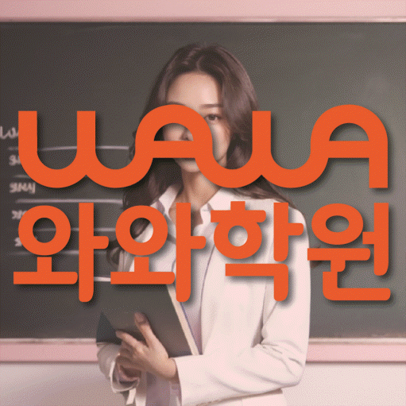

국어 수업 가능 학년
초1 · 초2 · 초3 · 초4 · 초5 · 초6 · 중1 · 중2 · 중3 · 고1 · 고2 · 고3
ACADEMIC SUPPORT LOCAL GUIDE
송도동 보습 수업을 비교할 때 살펴볼 학교 진도, 복습·과제·오답 관리, 학년별 수업 정보와 상담 기준을 안내합니다. 센터 위치와 등원 기준도 함께 안내합니다.
30초 핵심 안내
인천 연수구 송도동에서 보습학원을 검색한 학부모가 가장 먼저 확인할 답은 “우리 아이가 막히는 지점을 설명할 수 있는가”입니다. 과제를 시작하려는 의지는 있지만 틀린 문제를 답만 확인하고 다시 풀지 않는 학생이라면 선행량보다 오답을 원인별로 분류한 뒤 답을 가리고 다시 푸는 재확인 절차를 우선 검토하고, 입시설계도 홍보 표현이 아니라 적용 절차와 확인 방법으로 질문하는 편이 좋습니다. 송도동의 제공 수업 장소는 인천 연수구 인천타워대로54번길 15-5 북일프라자 2층 와와학습코칭학원입니다. 송도동에서 등록 전에는 출발 지점별 이동과 수업 종료 후 귀가 계획까지 맞춰 보아야 합니다.
송도동은 수업 가능 생활권 기준입니다. 실제 방문 센터는 와와학습코칭센터 웰카운티점이며, 주소와 등록 정보는 아래 센터 기준 정보에서 확인할 수 있습니다.
초1 · 초2 · 초3 · 초4 · 초5 · 초6 · 중1 · 중2 · 중3 · 고1 · 고2 · 고3
초1 · 초2 · 초3 · 초4 · 초5 · 초6 · 중1 · 중2 · 중3 · 고1 · 고2 · 고3
초1 · 초2 · 초3 · 초4 · 초5 · 초6 · 중1 · 중2 · 중3 · 고1 · 고2 · 고3



북일프라자 1차가 아닌 MUZE건물 2층 북일프라자 2층입니다 북일프라자 2층, 뮤즈카페 건물위 2층입니다
센터 기준 정보
센터명·주소·등록 정보와 교습비 확인 경로를 상담 전에 살펴볼 수 있도록 정리했습니다.
인천 연수구 송도동 상담 기준
인천 연수구 인천타워대로54번길 15-5 북일프라자 2층 와와학습코칭학원
인천광역시동부교육지원청 등록 제3877호
실제 수업 가능 시간은 학년·과목별 일정에 따라 상담에서 확인합니다.
동네명은 수업 가능 지역을 찾기 위한 안내 기준입니다.
해송초등학교
해송중학교 · 능허대중학교 · 박문중학교
해송고등학교 · 연송고등학교 · 대건고등학교
센터명·주소·등록번호·가능 학년·학교 참고 정보는 제공된 센터 자료를 기준으로 정리했으며, 실제 수업 범위와 일정은 상담에서 다시 확인합니다.
지역별 학습 안내
학생의 과목별 학습 상황과 상담 전에 확인할 기준을 여섯 가지 주제로 나누어 정리했습니다.
검색 기준 지역은 인천 연수구 송도동이지만 제공된 학원 주소는 인천 연수구 인천타워대로54번길 15-5 북일프라자 2층 와와학습코칭학원이므로 동네 키워드만으로 거리를 판단해서는 안 됩니다. 송도동에서 가장 바쁜 요일을 놓고 보면 학생이 실제로 출발하는 곳이 학교인지 집인지에 따라 체감 이동은 달라지므로 요일별 출발 지점을 따로 적어 보십시오. 인천 연수구 송도동 학부모가 이동 시간을 계산할 때는 학교 수업이 늦는 날, 과제나 동아리 일정이 있는 날, 보호자 픽업이 어려운 날을 구분해 등원 가능 시간을 계산해야 합니다. 송도동에서 가장 바쁜 요일에도 지속 가능한지가 가까워 보이는 인상보다 중요한 선택 기준입니다.
송도동에서 가정한 핵심 학생 유형은 과제를 시작하려는 의지는 있지만 틀린 문제를 답만 확인하고 다시 풀지 않는 학생입니다. 송도동에서는 이 경우 의지나 집중력만 탓하기 전에 문제를 읽고, 개념을 떠올리고, 풀이를 시작하고, 채점 뒤 다시 보는 네 단계를 각각 확인해야 합니다. 인천 연수구 송도동 학생에게 오답을 원인별로 분류한 뒤 답을 가리고 다시 푸는 재확인 절차가 반복될 때 학습이 막히는 지점을 더 정확히 줄일 수 있습니다. 송도동의 현재 학년 학교 진도와 누적 빈틈을 따로 표시하면 선행이 필요한지 복습이 필요한지도 구분하기 쉬워집니다.
“입시설계”는 합격을 보장하는 문구가 아니라 학생의 현재 학년, 학교 기록, 학습 상태와 지원 일정을 근거로 선택지를 정리하는 과정이어야 합니다. 송도동에서 입시설계 조건을 기록할 때는 목표를 단정하기보다 필요한 자료, 준비 순서, 점검 시점과 대안 경로를 구분해 설명하는지 확인하십시오. 송도동 학부모가 과거 결과나 후기만 볼 경우 학생 조건의 차이를 놓칠 수 있으므로, 사례의 대상 학년과 출발점을 함께 물어보는 편이 좋습니다. 입시설계와 보습 수업이 연결되려면 당장 해야 할 교과 학습과 장기 준비를 별도 계획으로 제시하고 정기적으로 수정해야 합니다.
송도동 페이지의 제공 수업학교에는 해송초등학교, 해송중학교 등이 포함됩니다. 송도동에서는 학교명이 같아도 학년과 시기, 실제 교과 수업에 따라 진도와 평가 방식이 달라질 수 있으므로 과거 경험만으로 범위를 추정해서는 안 됩니다. 인천 연수구 송도동 학생의 주간 계획은 범위표, 학교 과제 공지, 수업 필기와 교과서 표시를 기준으로 수정되어야 합니다. 송도동에서 목록 밖 학교를 검토할 경우 수업 가능 여부는 별도로 확인해야 합니다.
성적 결과를 기다리기 전에도 송도동 학생의 학습 과정에서 확인할 지표가 있습니다. 인천 연수구 송도동 학부모가 주간 피드백을 볼 때는 정해진 시간에 시작하는지, 질문 표시가 늘었는지, 과제 미완료 이유를 말하는지, 답을 가리고 재풀이하는지를 주간 단위로 비교해 보십시오. 송도동에서 점수 밖의 변화를 확인하려면 오답 재풀이가 부족한 학생의 핵심 지표는 답을 가린 재풀이 완료율과 같은 실수의 재발 빈도입니다. 송도동 학생의 재풀이 기록을 기준으로 이 기록이 안정되지 않은 상태에서 문제량만 늘리면 변화의 원인을 알기 어려우므로 현재 학년의 필수 행동부터 확인해야 합니다.
상담 준비의 출발점은 송도동 학생의 최근 자료와 생활 시간을 한 장에 정리하는 것입니다. 송도동에서 질문을 준비할 때는 최근 시험이나 확인 문제, 틀린 교재, 학교 과제, 공부 가능한 요일을 제시하고 오답 재풀이가 부족한 문제를 교사가 어떻게 진단하는지 들어 보십시오. 인천 연수구 송도동 학부모가 비교할 때는 수업 방식, 반 편성, 결석·보강, 과제량, 오답 재확인, 학부모 연락과 비용 기준을 항목별로 적으면 설명을 감정이 아니라 정보로 비교할 수 있습니다. 송도동에서 첫 주 계획을 확인할 때는 최종 결정에서는 성적을 보장하는 문구보다 학생이 실제로 실행할 수 있는 첫 주 계획과 수정 기준이 제시되는지를 보아야 합니다.
FAQ
송도동 페이지에 제공된 주소는 인천 연수구 인천타워대로54번길 15-5 북일프라자 2층 와와학습코칭학원입니다. 송도동 등원 계획은 출발 장소와 요일별 일정, 수업이 끝난 뒤 귀가 시간을 각각 계산하고 필요한 편의 서비스가 실제 제공되는지도 확인해야 합니다.
송도동 상담에서는 합격을 약속하는지보다 현재 학년, 학교 기록, 학습 상태와 지원 일정을 근거로 선택지와 대안을 설명하는지 확인하세요.
송도동 페이지에 제공된 학교 정보는 해송초등학교, 해송중학교입니다. 학교별 준비는 송도동 학생이 가져온 최근 자료를 기준으로 정해야 합니다. 안내 목록 밖 학교라면 교재와 학년을 전달해 수업 가능 여부를 별도로 물어보세요.
과제를 시작하려는 의지는 있지만 틀린 문제를 답만 확인하고 다시 풀지 않는 학생이라면 현재 학년의 빈틈을 나누어 보고 오답을 원인별로 분류한 뒤 답을 가리고 다시 푸는 재확인 절차를 실제 수업과 과제에 연결하는지를 우선 확인하는 편이 좋습니다.
송도동 학생의 결과는 출발점과 시험 조건, 학습 기간에 따라 달라지므로 구체적인 성적 상승 수치를 미리 약속할 수 없습니다. 송도동 학생은 답을 가린 재풀이 완료율과 같은 실수의 재발 빈도 같은 과정 지표와 학교 평가를 함께 추적하며 계획을 조정하는 설명이 더 현실적입니다.
상담 상황 예시
송도동의 등원 위치와 수업 종료 후 일정을 한 주표에 적어 보니 제공 주소가 생활 리듬에 맞는지 차분히 판단할 수 있었습니다. 송도동에서는 입시설계도 조건과 확인 방법을 구분해 메모하니 할인이나 홍보 문구에만 흔들리지 않았습니다.
송도동 상담 전에는 오답 재풀이가 부족한 문제를 단순히 의지 부족으로 생각했는데, 최근 교재와 과제 기록을 나눠 보니 무엇을 먼저 바꿔야 할지 이해하기 쉬웠습니다. 송도동에서는 결과를 서두르기보다 먼저 오답을 원인별로 분류한 뒤 답을 가리고 다시 푸는 재확인 절차를 확인하자는 기준이 현실적으로 느껴졌습니다.
아래 두 문장은 실제 이용자의 인용이 아니라, 송도동 학부모가 상담 후 남길 수 있는 후기 형식의 예시입니다.